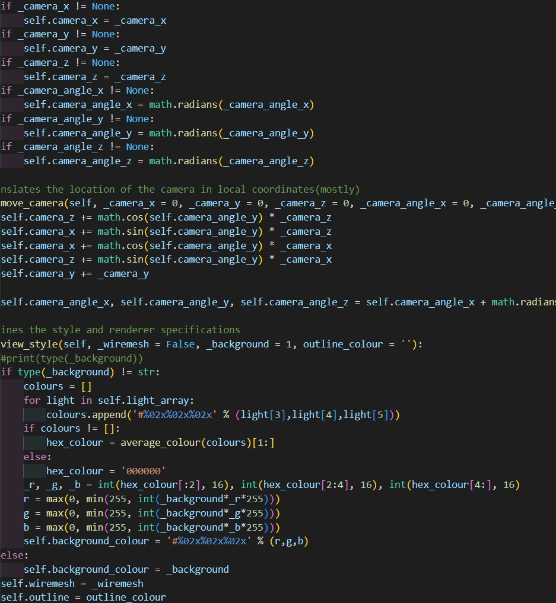

Scroll to top
About me
I'm a year 12 computer science student with an interst in programming, I work on open source projects such as my python based minimalist 3D renderer.
About me
Github Page

Focus Timer
This project is a javascipt based web timer/ countdown to help you stay on track with tasks, it is fully open source and can be found with the link below. It is also hosted on my github.
Timer website
Github repository